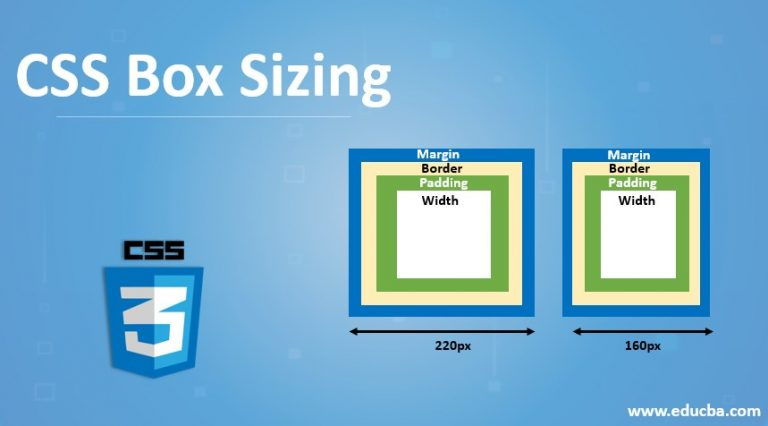
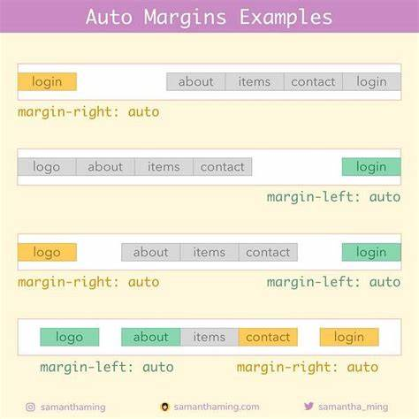

What is a box model in CSS? Give box-sizing property definition
The box model in CSS is like putting each element on a web page in a box.
This box has layers: content, padding, border, and margin. Content is what's inside the box, padding is the space around the content, border is the outline of the box
and margin is the space around the box itself. Understanding and controlling these layers helps in designing web layouts.

The 'box-sizing' property in CSS determines how the browser calculates the total width and height of an element, including its padding and border.
There are two main values: 'content-box' and 'border-box'.
What is a “clearfix hack” and when does it need to be applied?
The "clearfix hack" is a CSS technique used to fix layout issues caused by floated elements. When you have floated elements inside a container, sometimes the container's height collapses, causing layout problems.
The clearfix hack is applied to the container element to force it to encompass its floated children properly, ensuring that it stretches to contain its content and displays correctly.
What is a “margin collapse” and what are the use cases for margin: auto and negative margin values?
Margin collapse is when the top and bottom margins of two adjacent elements collapse into a single margin. This can happen in certain situations, like when there's no content or padding separating the margins, causing them to combine rather than stack on top of each other.


- Use cases for margin: auto: This property is often used to center elements horizontally within their parent container. Setting 'margin: auto' on a block-level element will evenly distribute the remaining space around it, centering it horizontally.
- Use cases for negative margin values: Negative margins are sometimes used to adjust the positioning of elements. They can be used to overlap elements or pull them closer to each other. However, they should be used with caution as they can affect the layout unpredictably, especially when combined with other layout techniques.
What was the problem with achieving Holy Grail layout?
The main challenges in achieving the Holy Grail layout were making all columns the same height, allowing the center one to adjust to content ensuring the layout remained flexible for different screen sizes.
This often required complex CSS and JavaScript solutions.

What are the modern ways to achieve Holy Grail layout?
Modern CSS techniques like Flexbox and Grid Layout have simplified achieving the Holy Grail layout. With Flexbox, 'setting display: flex;'' on a container makes its children flexible, allowing easy alignment and resizing. Grid Layout provides a two-dimensional grid system for precise control over layout, making complex arrangements like the Holy Grail layout straightforward with minimal code.
These techniques offer better browser support and cleaner code, enabling developers to create flexible and responsive layouts with ease.